residual error: \(e= Y-\hat{Y}\) (\(\epsilon\) is not the same as \(e\))
Regression
A regression equation is a function that indicates how the average value of one response variable for given values of one or more predictor variables varies with these predictor variables; that is, \(E(Y|X_1, X_2, ..., X_k)\)
Simple regression
The term simple means there is a single predictor
The fitted model remains as: \(\hat{Y}=a+bX_{i}\)
\(\hat{Y}\) is the predicted value of \(y_{i}\) given \(x_{i}\). Also called ‘fitted’ values, they are the linear funtion of X.
\(a\) the intercept on the y-axis; value of \(\hat{Y}\) when \(x_{i}=0\).
\(b\) the slope of the line; the change in \(\hat{Y}\) with a 1-unit increase in \(x_{i}\).
Fitting a regression
Want a line that is as ‘close’ as possible to the existing data points we have
The method of least squares is employed to obtain the estimates \(a\) and \(b\)
The sum of squared residuals is minimized in the least squares method.
Call:
lm(formula = Death ~ Alcohol, data = cirrhosis)
Residuals:
Min 1Q Median 3Q Max
-9.3966 -1.9639 0.2479 2.9884 4.7716
Coefficients:
Estimate Std. Error t value Pr(>|t|)
(Intercept) -2.318 2.065 -1.123 0.282
Alcohol 1.405 0.202 6.954 1e-05 ***
---
Signif. codes: 0 '***' 0.001 '**' 0.01 '*' 0.05 '.' 0.1 ' ' 1
Residual standard error: 3.942 on 13 degrees of freedom
Multiple R-squared: 0.7881, Adjusted R-squared: 0.7718
F-statistic: 48.35 on 1 and 13 DF, p-value: 1.001e-05
Let us tidy it.
Fitted model and testing its coefficients
library(broom)tidy(mod1) |>mutate_if(is.numeric, round, 3) -> out1library(kableExtra)kable(out1, caption ="t-tests for model parameters") %>%kable_classic(full_width = F)
t-tests for model parameters
term
estimate
std.error
statistic
p.value
(Intercept)
-2.318
2.065
-1.123
0.282
Alcohol
1.405
0.202
6.954
0.000
Focus on the model, its coefficients
What is the scale of these variables? Are these coefficient estimates meaningful in the context?
What is the error around these estimates?
Assumptions
Model forming assumptions
\(X\) is known without error
\(Y\) is linearly related to \(X\)
There is a random variability of \(Y\) about this line
Assumptions
More assumptions to form \(t\) and \(F\) statistics:
Variability in \(Y\) about the line is constant and independent of \(X\) variable.
The variability of \(Y\) about the line follows normal distribution.
The distribution of \(Y\) given \(X = X_i\) is independent of \(Y\) given \(X = X_j\).
Residuals and assumptions
Most assumptions are on the errors (residuals)
independent
normal
random
Is there a pattern in my residuals?
Do they suggest what to do?
Residuals
Types of residuals
raw or ordinary residual is just (observation-fit)
Standardized Residual= Residual/Std.Dev of residual
The regression model is influenced by outliers or unusual points because the slope estimate of the regression line is sensitive to these outliers.
So we define Studentised or deleted t Residual
Similar to Standardized Residual without the observation under consideration. That is,
Studentised residual = residual/std. dev of residual (after omitting the particular observation).
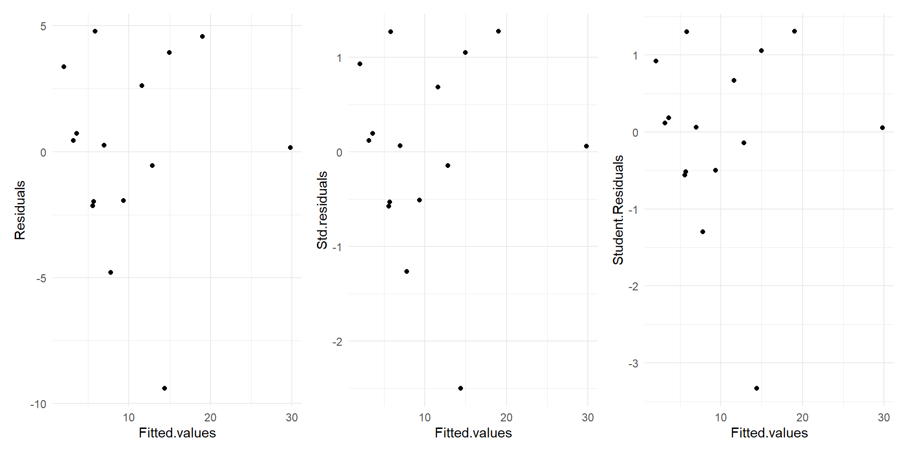
Residual plot for Alcohol~deaths model
For small sample sizes, residual diagnostics is difficult
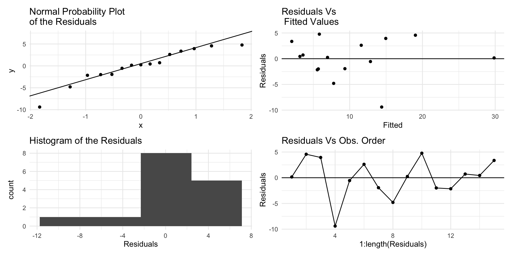
Residual plot for Alcohol~deaths model
par(mfrow=(c(2,2)))plot(mod1)
Residuals showing need for transformation
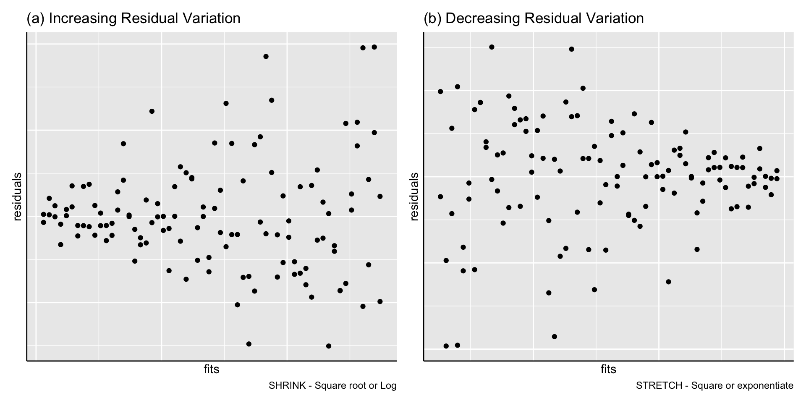
Non-constant Residual Variation
Adding more predictors
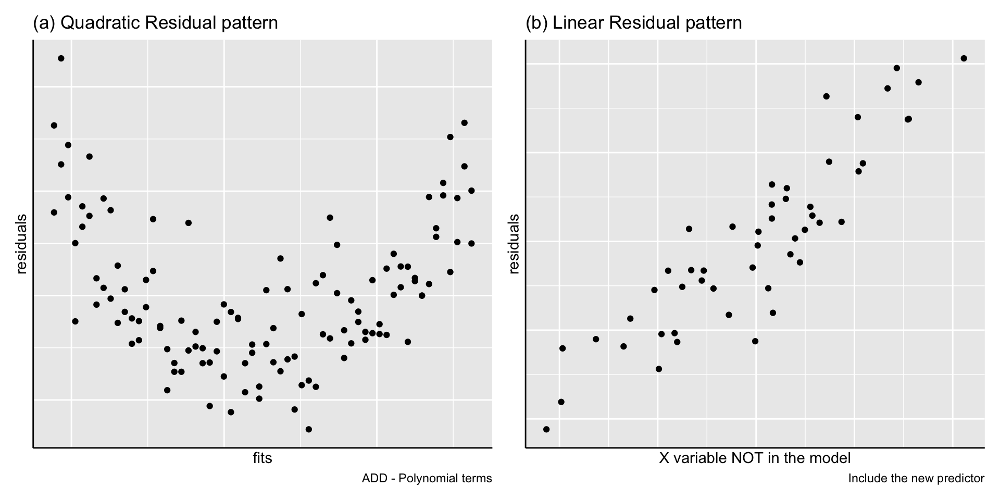
Subgrouping patterns
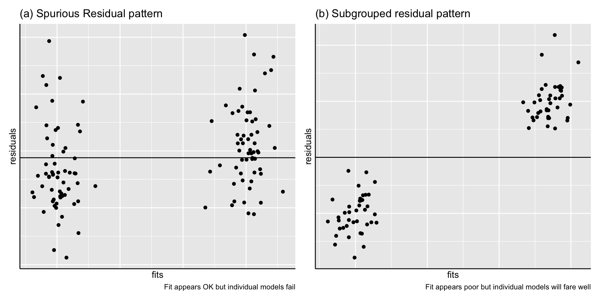
Outliers
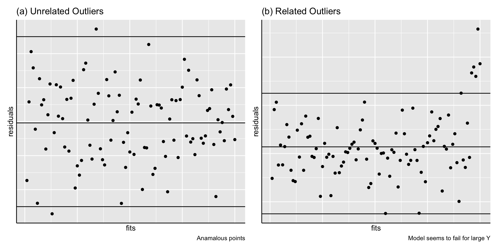
Autocorrelation
Neighbouring residuals depend on each other
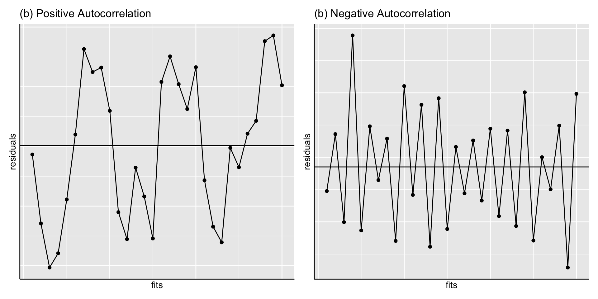
Improving simple regression
Use a different predictor or explanatory variable
Transform the \(Y\) variable
Add other explanatory variables to the model (next week)
Deletion of invalid (as opposed to outlier) observations
Reconsider the linear relationship
Tests of significance
library(broom)tidy(mod1) |>mutate_if(is.numeric, round, 3) -> out1library(kableExtra)kable(out1, caption ="t-tests for model parameters") %>%kable_classic(full_width = F)
t-tests for model parameters
term
estimate
std.error
statistic
p.value
(Intercept)
-2.318
2.065
-1.123
0.282
Alcohol
1.405
0.202
6.954
0.000
- $t$ tests of intercept and slope
- $H_0=true~slope=0$; $H_0=true~intercept=0$
- For `Alcohol~deaths` model, the slope is significant
but not the intercept
Model quality measures
summary(mod1)
Call:
lm(formula = Death ~ Alcohol, data = cirrhosis)
Residuals:
Min 1Q Median 3Q Max
-9.3966 -1.9639 0.2479 2.9884 4.7716
Coefficients:
Estimate Std. Error t value Pr(>|t|)
(Intercept) -2.318 2.065 -1.123 0.282
Alcohol 1.405 0.202 6.954 1e-05 ***
---
Signif. codes: 0 '***' 0.001 '**' 0.01 '*' 0.05 '.' 0.1 ' ' 1
Residual standard error: 3.942 on 13 degrees of freedom
Multiple R-squared: 0.7881, Adjusted R-squared: 0.7718
F-statistic: 48.35 on 1 and 13 DF, p-value: 1.001e-05
Model summary (or Quality) measures
\(R^2\) is the proportion of variation explained by the fitted model
A meaningful model must have at least 50% \(R^2\)
A large \(R^2\) is important to explain the relationship(s)
Residual standard deviation (error) \(S\) has to be small
How small? Difficult to say. Compare \(S\) with the overall spread in \(Y\) or with the mean of \(Y\)
\(R^2\) is the proportion of variance in \(y\) explained by \(x\) .
summary(ols)
Call:
lm(formula = Death ~ Alcohol, data = cirrhosis)
Residuals:
Min 1Q Median 3Q Max
-9.3966 -1.9639 0.2479 2.9884 4.7716
Coefficients:
Estimate Std. Error t value Pr(>|t|)
(Intercept) -2.318 2.065 -1.123 0.282
Alcohol 1.405 0.202 6.954 1e-05 ***
---
Signif. codes: 0 '***' 0.001 '**' 0.01 '*' 0.05 '.' 0.1 ' ' 1
Residual standard error: 3.942 on 13 degrees of freedom
Multiple R-squared: 0.7881, Adjusted R-squared: 0.7718
F-statistic: 48.35 on 1 and 13 DF, p-value: 1.001e-05
Variance Explained
\(R^2=\frac{SS~regression}{SS~Total}\)
SS <-anova(ols) |>tidy() |>select(term:sumsq) |> janitor::adorn_totals()SS
term df sumsq
Alcohol 1 751.4408
Residuals 13 202.0286
Total 14 953.4693
\(R^2_{adj}\) is adjusted to remove the variation that is explained by chance alone
\(R^2_{adj}=1-\frac{MS~Error}{MS~Total}\)
where: \(MS~Error\) = \(frac{SSE}{n-k-1}\) \(MS~Total\) = \(frac{SST}{n-1}\)
therefore \(R^2_{adj}\) can also be written as: \(R^2_{adj}=1-\frac{(1-R^2)*(n-1)}{(n-k-1)}\)
Df Sum Sq Mean Sq F value Pr(>F)
Alcohol 1 751.4 751.4 48.35 1e-05 ***
Residuals 13 202.0 15.5
---
Signif. codes: 0 '***' 0.001 '**' 0.01 '*' 0.05 '.' 0.1 ' ' 1
For the straight line model, the F-test is equivalent to testing the hypothesis that the true slope is zero.
ANOVA \(F\)-test
- Significant F ratio need not always imply that the
straight line is the best fit to the data.
- For `Alcohol~deaths` model, the $F$ statistic is
significant which means that the fitted model explains significant variation
For regression, DF = \(1\) as there are two parameters \(a\) and \(b\) fitted in the model
For total, DF = \(n-1\) since there are n observations
For error, DF = by subtraction = \((n-1)-1 = n-2\)
Mean Square (MS) values are obtained as MS = SS/DF
F ratio for regression =MS(Regression)/MS(Error)
F ratio follows the \(F\) distribution with \((1, n-2)\) d.f and provides the significance of the model fitted.
the ratio of two sample variances (or MS) follows the \(F\) distribution (normal case)
Prediction
The predicted response at value \(x=x_0\) is obtained using the fitted regression equation.
Confidence & prediction intervals can also be constructed.
Note that prediction intervals are for individual observations whereas the confidence intervals are for the expected (mean) response for a given \(x_0\)
predict(mod1, new =data.frame(Alcohol=10), interval="confidence", level =0.95)
fit lwr upr
1 11.72778 9.476416 13.97915
predict(mod1, new =data.frame(Alcohol=10), interval="prediction", level =0.95)
fit lwr upr
1 11.72778 2.918701 20.53686
Outlier effect on regression
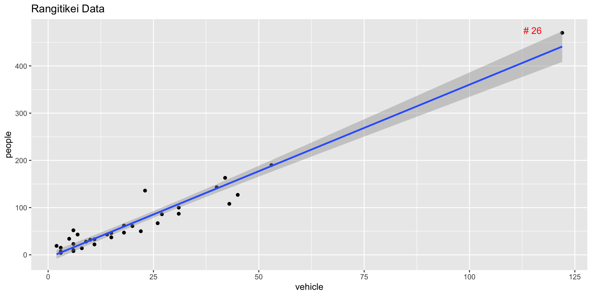
Scatter plot of People vs Vehicle
Leverage and Cook’s distance
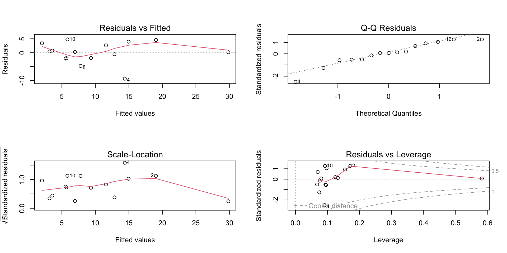
A distant \(x\) value has a higher leverage.
This leverage is often measured by the \(h_{ii}\) or hi value
Check \(h_{ii}\) > \(\frac{3p}{n}\) or not
Influence of a point on the regression is measured using the Cook’s distance\(D_i\)
related to difference between the regression coefficients with and without the \(i^{th}\) data point.
\(D_{i} >0.7\) can be deemed as being influential (for \(n>15\))
Leverage and Cook’s distance
Robust regression models
Robust regression methods are designed to limit the effect that violations of assumptions by the underlying data-generating process have on regression estimates.
For example, least squares estimates for regression models are highly sensitive to outliers: an outlier with twice the error magnitude of a typical observation contributes four (two squared) times as much to the squared error loss, and therefore has more leverage over the regression estimates.
Robust models
We can fit a robust linear model using the functions MASS::rlm()robustbase::lmrob().
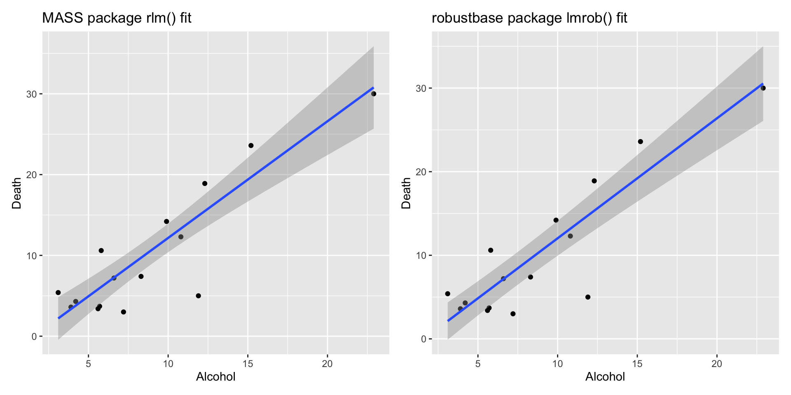
Robust Models
To determine if a robust regression model offers a better fit to the data compared to the OLS model, we can calculate the residual standard error of each model.
The residual standard error (RSE) is a way to measure the standard deviation of the residuals in a regression model. The lower the value for RSE, the more closely a model is able to fit the data.
Robust Models
#fit least squares regression modelols <-lm(Death~Alcohol, data=cirrhosis)#find residual standard error of ols modelsummary(ols)$sigma
[1] 3.942164
#fit robust regression modelrobust <-rlm(Death~Alcohol, data=cirrhosis)#find residual standard error of robust modelsummary(robust)$sigma
[1] 3.417522
Cross Validation (CV)
A tool to avoid overfitting (more important with multiple predictors)
Evaluate performance of model
Cross Validation (CV)
Split the sample data randomly into (equal) k subsets (parts) by resampling.
Fit the model for \((k − 1\)) subsets of the data
Predict for the omitted subsets
Compare prediction errors
Repeat for each subsets of the data
Cross Validation Types
K-fold
Stratified K-fold
Same as K-fold but splitting data governed by criteria so that each subset has the same proportion of obervations of a given categorical value
Leave One Out (LOO)
Leaves out a single data point, then uses the same process as K-fold CV
R has many packages for cross validation
Example (Alcohol consumption data)
# CV using Root Mean Sq Error as measure of prediction errorlibrary(caret); library(MASS, exclude ="select")set.seed(123)fitControl <-trainControl(method ="repeatedcv", number =5, repeats =100)lmfit <-train(Death ~Alcohol, data= cirrhosis, trControl = fitControl, method="lm")lm.rmses <- lmfit$resample[,1]rlmfit <-train(Death ~Alcohol, data = cirrhosis, trControl=fitControl, method ="rlm")rlm.rmses <- rlmfit$resample[,1]dfm <-cbind.data.frame(lm.rmses,rlm.rmses)library(patchwork)qplot(data=dfm, lm.rmses, geom="boxplot") /qplot(data=dfm, rlm.rmses, geom="boxplot")
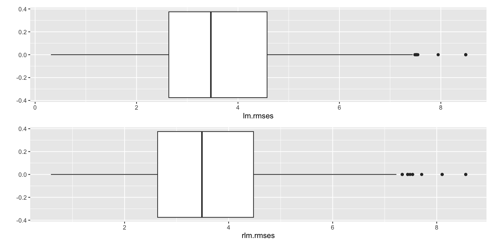
Choosing the best model
The best model is not decided purely on statistical grounds.
If the main aim is to describe relationships, include all the relevant variables.
If the main aim is to predict, prefer the simplest feasible (parsimonious) model with smaller number of predictors.
Examine the literature to discover similar examples, see how they are tackled, discuss the matter with the researcher etc.
Main points
Concepts and practical skills you should have at the end of this chapter:
Understand and be able to perform a simple linear regression on bivariate related data sets
Use scatter plots or other appropriate plots to visualize the data and regression line
Examine residual diagnostic plots and test assumptions, then perform appropriate transformations as necessary
Summarize regression results and appropriate tests of significance. Interpret these results in context of your data
Use a regression line to predict new data and explain confidence and prediction intervals
Understand and explain the concepts of robust regression modeling, and cross-validation.